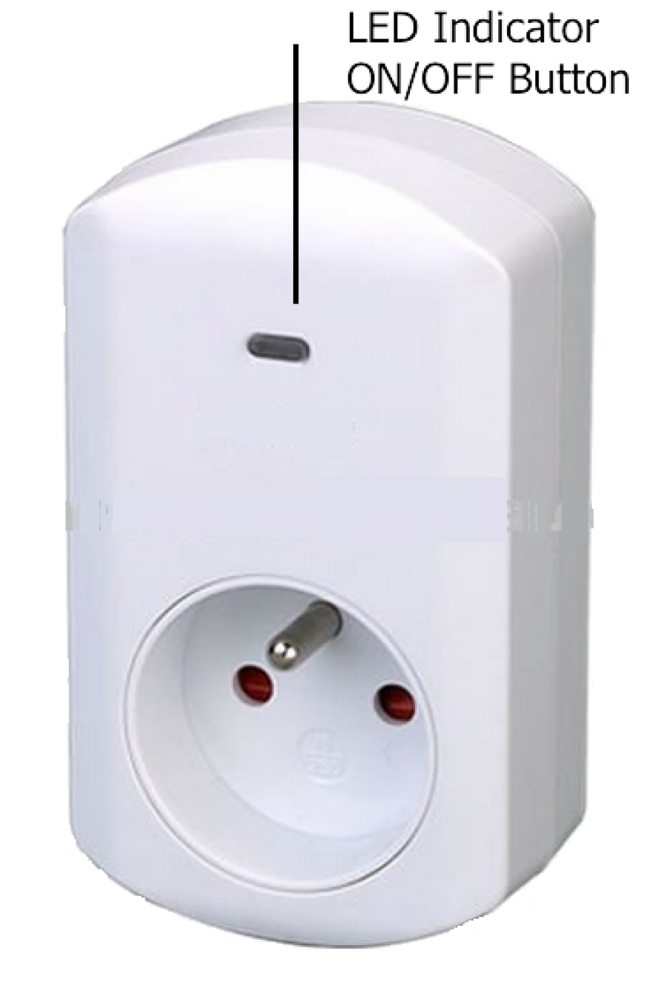

POP_123627
Firmware Version : 1.0 |
 |
Quick StartA This is a Z-Wave actuator. Inclusion and Exclusion are confirmed by a tripple click of the button. Please refer to the chapters below for detailed information about all aspects of the products usage. |
Product description
This is a switch plug that can be placed between a wall outlet Type E and electric devices, plugged in by cord. It can switch all electrical loads up to 3500 W. The device is IP 20 rated and can therefore only be used on dry environments. Switching is controlled wirelessly using Z-Wave or locally using a toggleing button. A blue LED indicates the switching status. An automatic 'Off' function and programmable switching behavior make the device a very flexible tool for the inhouse lighting.
Installation Guidelines
The plug can be plugged into every wall outlet for Plug-Type E. It is IP20 rated and can therefore only be used in dry environments. Do not locate the device facing direct sunlight, humid or dusty place. The suitable ambient temperature for the device is 0°C ~ 40°C. Plugs must not be stacked and operated.
Behavior within the Z-Wave network
I On factory default the device does not belong to any Z-Wave network. The device needs to join an existing wireless network to communicate with the devices of this network. This process is called Inclusion. Devices can also leave a network. This process is called Exclusion. Both processes are initiated by the primary controller of the Z-Wave network. This controller will be turned into exclusion respective inclusion mode. Please refer to your primary controllers manual on how to turn your controller into inclusion or exclusion mode. Only if the primary controller is in inclusion or exclusion mode, this device can join or leave the network. Leaving the network - i.e. being excluded - sets the device back to factory default.
If the device already belongs to a network, follow the exclusion process before including it in your network. Otherwise inclusion of this device will fail. If the controller being included was a primary controller, it has to be reset first.
Inclusion and Exclusion are confirmed by a tripple click on the button.
Operating the device

The device is able to switch electric loads up to 3500 W and can be switched wirelessly or using the local button.
Local Operation
The local button allowes to switch the device. A short press on the button toggles the switch. If
it is in on state the button turns off and respective in off state the button turns on.
LED Usage
The device has one blue LED used to indicate status information. The behavior
of the blue LED can be configured:
- It may show the switching state. This is the default option.
- It may serve as night light. So it is on when the light is off.
- It is deactivated.
- It can be controlled wirelessly and used as an indicator for other advanced functions.
Automated Switch-Off Function
If activated the switch will turn off automatically after a defined time. This function is particularly useful if the switch is
turned on using a motion detector of any other type of sensor. In this case it is possible to further define the reaction of the switch
on certain signals sent from a sensor. This allowes a very flexible application of the plug switch in the house.
Child Protection
The device can be turn into a child protection mode. In this mode all local operation is disabled.
The child protection mode MUST be turned on wirelessly. However in protected by sequence mode it is possible to unlock the device for local operation with a triple click. The unlock state will last for 5 seconds.
Associations
A Z-Wave devices control other Z-Wave devices. The relationship between one device controlling another device is called association. In order to control a different device, the controlling device needs to maintain a list of devices that will receive controlling commands. These lists are called association groups and they are always related to certain events (e.g. button pressed, sensor triggers, ...). In case the event happens all devices stored in the respective association group will receive a common wireless command.
Association Groups:
| 1 | Send Reports on switch state change (max. nodes in group: 5) |
Configuration Parameters
Z-Wave products are supposed to work out of the box after inclusion, however certain configuration can adapt the function better to user needs or unlock further enhanced features.
IMPORTANT: Controllers may only allow to configure signed values. In order to set values in the range 128 … 255 the value sent in the application shall be the desired value minus 256. For example: to set a parameter to 200 it may be needed to set a value of 200 minus 256 = minus 56. In case of two byte value the same logic applies: Values greater than 32768 may needed to be given as negative values too.
| Value | Description |
|---|---|
| 0 | Disabled |
| 1 | Show switch state (Default) |
| 2 | Night mode (inverted switch state) |
| 3 | Operated by Indicator Command Class |
| Value | Description |
|---|---|
| 0 | Disabled (Default) |
| 1 — 65535 | sec |
| Value | Description |
|---|---|
| 0 | Switch off (Default) |
| 1 | Ignore |
| 2 | Switch on |
| 3 | Switch on if load is off else switch off |
| Value | Description |
|---|---|
| 0 | No, turn off |
| 1 | Yes (Default) |
Technical Data
| Power Supply | 230V ~50-60 Hz |
| Attachable Loads | all loads up to 3500 W |
| Fuse | Type: T 1.25 A H (Load 1.25 Ampere, high shutdown capacity), D: 5 mm, L: 20 mm |
| IP Rating | 20 |
| Frequency | 868.42 MHz (SRD Band) |
| Wireless Range | up to 100 m outside, on average up to 20 m inside buildings |
| Explorer Frame Support | Yes |
| SDK | 4.54 pl1 |
| Device Type | Slave with routing capabilities |
| Generic Device Class | Binary Switch |
| Specific Device Class | Binary Power Switch |
| Routing | Yes |
| FLiRS | No |
| Firmware Version | 1.0 |